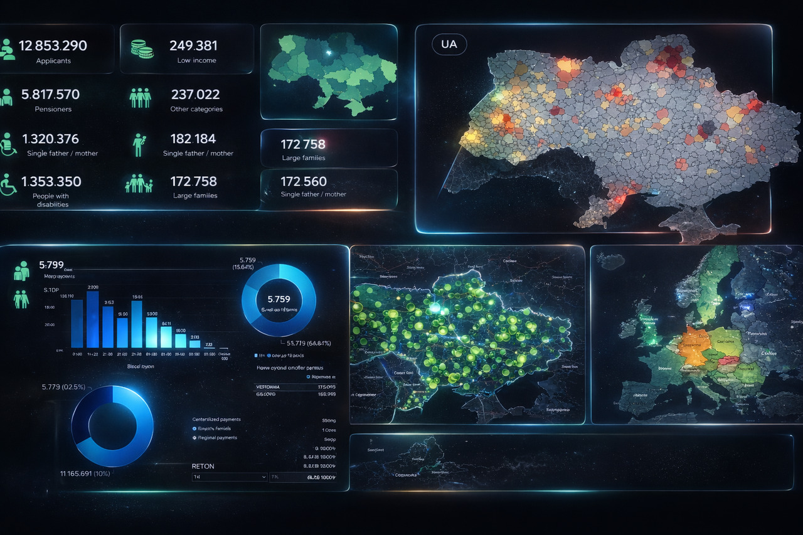
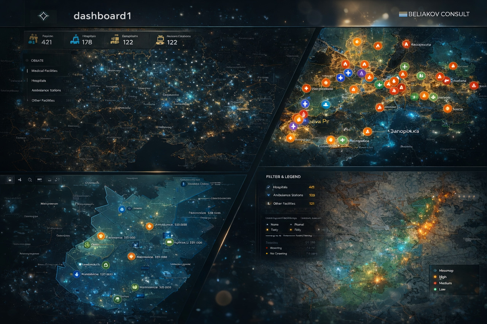
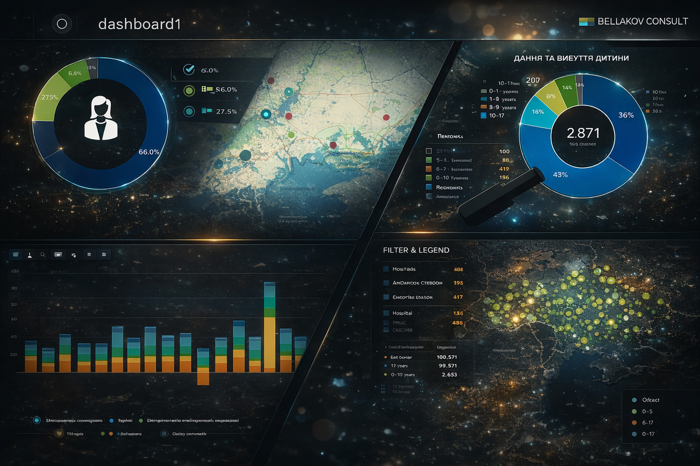

National Social Policy
Rebuilt KPI logic for fragmented registries where trust had eroded.
Result: Defensible analytics for policy.
Hands-on BI and analytics architecture for environments where trust, funding, and policy depend on data accuracy.
Indicators appear stable while drifting away from operational reality.
Definitions change quietly, breaking comparability without visible alarms.
Parallel spreadsheets emerge when BI stops being defensible.
Duplicates and uncontrolled transformations distort analytics invisibly.
No clear trace from KPI to source. Under scrutiny, numbers fail.
Data is adjusted to "look right". Dashboards survive — integrity does not.
Donors demand traceability that standard reporting cannot provide.
Leaders bypass BI and rely on intuition due to lack of data trust.
Identify where your analytics stops reflecting reality. Review KPI logic and trace metrics to sources.
Redesign data models with embedded quality controls. Remove silent fixes and manual overrides.
Make analytics withstand donor scrutiny. Replace presentation-ready KPIs with auditable logic.

Rebuilt KPI logic for fragmented registries where trust had eroded.

Integrated GIS with BI to reveal structural accessibility gaps.

Automated data collection for multi-country donor program audit trails.